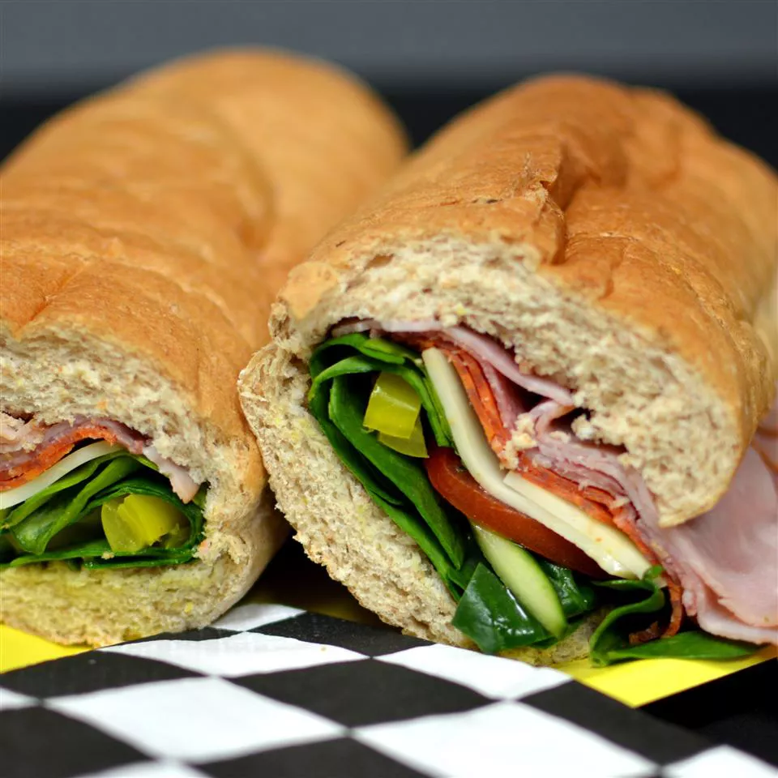

Italian Sub

Description
This is a classic Italian sub sandwich with three kinds of meat and provolone cheese.
The kind you get in a mom and pop pizza joint. You'll be glad you tried it!
Ingredients
- 1 head red leaf lettuce, rinsed and torn
- 2 medium fresh tomatoes, chopped
- 1 medium red onion, chopped
- 6 tablespoons olive oil
- 2 tablespoons white wine vinegar
- 2 tablespoons chopped fresh parsley
- 2 cloves garlic, chopped
- 1 teaspoon dried basil
- ¼ teaspoon red pepper flakes
- 1 pinch dried oregano
- ½ pound sliced Capacola sausage
- ½ pound thinly sliced Genoa salami
- ¼ pound thinly sliced prosciutto
- ½ pound sliced provolone cheese
- 4 submarine rolls, split
- 1 cup dill pickle slices
Steps
- In a large bowl, toss together the lettuce, tomatoes and onion. In a separate bowl,
whisk together the olive oil, white wine vinegar, parsley, garlic, basil, red pepper
flakes and oregano. Pour over the salad, and toss to coat evenly. Refrigerate for about 1 hour.
- Spread the submarine rolls open, and layer the Capacola, salami, prosciutto, and provolone
cheese evenly on each roll. Top with some of the salad, and as many pickle slices as desired.
Close the rolls and serve.